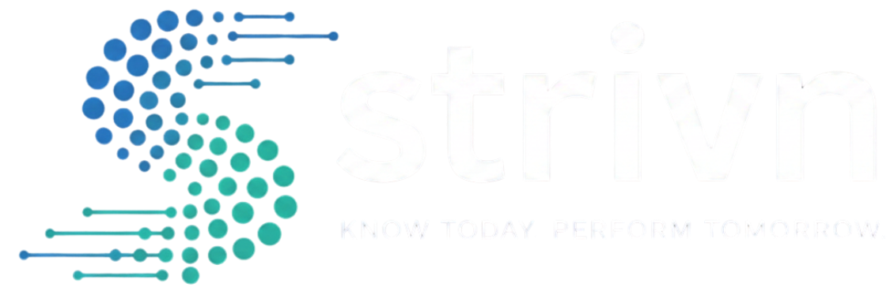
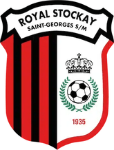
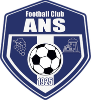
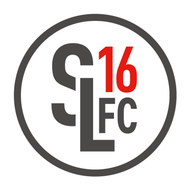
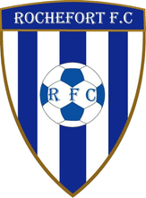
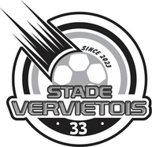
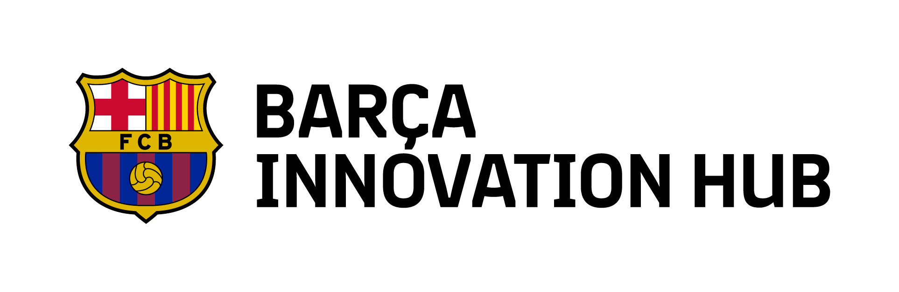

<title>STRIVN Semaine type</title>
<meta name="description" content="Proposition de refonte de l'accueil STRIVN : la page suit la semaine du préparateur, de l'export GPS du lundi au rapport du dimanche." />
<link rel="preconnect" href="https://fonts.googleapis.com" />
<link rel="preconnect" href="https://fonts.gstatic.com" crossorigin />
<link rel="stylesheet" href="https://fonts.googleapis.com/css2?family=Archivo:wdth,wght@62..125,400..600&family=JetBrains+Mono:wght@400;500;600&display=swap" />
<style>
/* ================================================================
   STRIVN · proposition de refonte · septembre 2026
   Palette STRIVN inchangée. Nouveautés : Archivo à chasse variable,
   rail « semaine » comme fil narratif, une seule surface claire
   (le tableur d'avant).
   ================================================================ */
:root {
  color-scheme: dark;
  --void: #07080f;
  --void-deep: #050610;
  --navy-950: #03091a;
  --navy-900: #06152b;
  --navy-850: #0b1e3a;
  --navy-800: #112849;
  --navy-700: #1a3258;
  --navy-500: #3d5a8a;
  --navy-300: #8497bd;
  --navy-200: #b5c2d7;
  --white: #f8fafc;
  --electric: #2d7ff9;
  --electric-500: #4f94fb;
  --ready: #27d7a1;
  --watch: #ffb020;
  --risk: #ff5c5c;
  /* La seule surface claire du site : le tableur que l'on quitte. */
  --paper: #e6eaf1;
  --paper-ink: #1c2638;
  --paper-rule: #c3cbd8;

  --line: rgba(255, 255, 255, 0.07);
  --line-strong: rgba(255, 255, 255, 0.14);
  --fg: var(--white);
  --fg-muted: var(--navy-200);
  --fg-subtle: var(--navy-300);
  --fg-faint: var(--navy-500);

  --sans: 'Archivo', -apple-system, BlinkMacSystemFont, 'Segoe UI', sans-serif;
  --mono: 'JetBrains Mono', ui-monospace, 'SF Mono', Menlo, monospace;
  --shadow-lg: 0 16px 48px rgba(3, 9, 26, 0.55), 0 4px 12px rgba(3, 9, 26, 0.3);
  --gutter: clamp(16px, 4vw, 48px);
  --max: 1240px;
  --rail: 132px;
}

* { box-sizing: border-box; }
html { scroll-behavior: smooth; }
@media (prefers-reduced-motion: reduce) { html { scroll-behavior: auto; } }
body {
  margin: 0;
  background: var(--void);
  color: var(--fg);
  font-family: var(--sans);
  font-size: 16px;
  line-height: 1.55;
  font-variation-settings: 'wdth' 100;
  -webkit-font-smoothing: antialiased;
}
a { color: inherit; }
img { max-width: 100%; display: block; }
:focus-visible { outline: 2px solid var(--electric); outline-offset: 3px; border-radius: 4px; }

.wrap { max-width: var(--max); margin-inline: auto; padding-inline: var(--gutter); }

/* ---------- Type scale ---------- */
.display {
  font-weight: 600;
  font-stretch: 78%;
  font-variation-settings: 'wdth' 78;
  font-size: clamp(44px, 6.6vw, 96px);
  line-height: 0.94;
  letter-spacing: -0.025em;
  margin: 0;
  text-wrap: balance;
}
.h2 {
  font-weight: 600;
  font-variation-settings: 'wdth' 82;
  font-size: clamp(32px, 4.6vw, 58px);
  line-height: 1.02;
  letter-spacing: -0.02em;
  margin: 0;
  text-wrap: balance;
}
.h3 {
  font-weight: 600;
  font-variation-settings: 'wdth' 90;
  font-size: 21px;
  line-height: 1.2;
  letter-spacing: -0.01em;
  margin: 0;
}
.lede { font-size: clamp(17px, 1.5vw, 19px); color: var(--fg-muted); max-width: 58ch; margin: 0; text-wrap: pretty; }
.body { color: var(--fg-muted); max-width: 60ch; margin: 0; }
.mono, .label {
  font-family: var(--mono);
  font-size: 11px;
  font-weight: 500;
  letter-spacing: 0.08em;
  text-transform: uppercase;
}
.label { color: var(--fg-subtle); }
.num { font-family: var(--mono); font-variant-numeric: tabular-nums; }

/* ---------- Buttons ---------- */
.btn {
  display: inline-flex; align-items: center; gap: 10px;
  font: 500 15px/1 var(--sans);
  padding: 14px 20px;
  border-radius: 6px;
  text-decoration: none;
  border: 1px solid transparent;
  transition: background-color .15s ease, border-color .15s ease;
  cursor: pointer;
}
.btn--primary { background: var(--electric); color: var(--white); }
.btn--primary:hover { background: var(--electric-500); }
.btn--ghost { border-color: var(--line-strong); color: var(--fg); }
.btn--ghost:hover { border-color: var(--navy-300); }
.btn svg { width: 16px; height: 16px; }

/* ---------- Header ---------- */
.top {
  position: sticky; top: env(safe-area-inset-top, 0px); z-index: 20;
  background: rgba(7, 8, 15, 0.92);
  border-bottom: 1px solid var(--line);
}
.top__in { display: flex; align-items: center; gap: 28px; height: 64px; }
.logo { height: 22px; width: auto; }
.nav { display: flex; gap: 22px; font-size: 14px; color: var(--fg-subtle); }
.nav a { text-decoration: none; }
.nav a:hover { color: var(--fg); }
.top__end { margin-left: auto; display: flex; align-items: center; gap: 18px; font-size: 14px; }
.top__end .btn { padding: 10px 16px; font-size: 14px; }
.top__login { color: var(--fg-subtle); text-decoration: none; }
.lang { font-family: var(--mono); font-size: 11px; color: var(--fg-subtle); letter-spacing: .08em; }

/* Week rail: seven days, the one on screen lights up. */
.week {
  display: flex; gap: 2px; align-items: stretch;
  border-top: 1px solid var(--line);
  height: 30px;
}
.week a {
  flex: 1; display: flex; align-items: center; gap: 8px;
  padding-inline: 10px;
  text-decoration: none;
  font-family: var(--mono); font-size: 10.5px; letter-spacing: .08em; text-transform: uppercase;
  color: var(--fg-faint);
  border-bottom: 2px solid transparent;
  transition: color .2s ease, border-color .2s ease;
  white-space: nowrap; overflow: hidden;
}
.week a b { font-weight: 600; color: var(--fg-subtle); }
.week a.is-on { color: var(--fg-muted); border-bottom-color: var(--electric); }
.week a.is-on b { color: var(--fg); }
.week a.is-match b { color: var(--fg); }

/* ---------- Section frame: rail stamp + content ---------- */
.sec { padding-block: clamp(72px, 10vw, 128px); border-top: 1px solid var(--line); scroll-margin-top: 96px; }
.frame { display: grid; grid-template-columns: var(--rail) minmax(0, 1fr); gap: 0 40px; }
.stamp {
  position: sticky; top: 118px; align-self: start;
  display: grid; gap: 4px;
  padding-top: 6px;
  border-top: 1px solid var(--line-strong);
}
.stamp__day { font-family: var(--mono); font-size: 13px; font-weight: 600; letter-spacing: .06em; color: var(--fg); }
.stamp__time { font-family: var(--mono); font-size: 22px; font-weight: 500; color: var(--fg); font-variant-numeric: tabular-nums; letter-spacing: -0.02em; }
.stamp__what { font-family: var(--mono); font-size: 10.5px; letter-spacing: .08em; text-transform: uppercase; color: var(--fg-subtle); }
.sec__head { display: grid; gap: 20px; margin-bottom: clamp(36px, 5vw, 56px); max-width: 820px; }

/* ---------- Hero ---------- */
.hero { padding-block: clamp(48px, 7vw, 96px) clamp(56px, 8vw, 104px); position: relative; overflow: hidden; }
.hero::before {
  /* Field grid, the pitch in plan view, barely there. */
  content: ''; position: absolute; inset: 0; pointer-events: none;
  background-image:
    linear-gradient(var(--line) 1px, transparent 1px),
    linear-gradient(90deg, var(--line) 1px, transparent 1px);
  background-size: 64px 64px;
  mask-image: radial-gradient(ellipse 70% 60% at 75% 40%, #000 20%, transparent 75%);
  -webkit-mask-image: radial-gradient(ellipse 70% 60% at 75% 40%, #000 20%, transparent 75%);
  opacity: .7;
}
.hero__grid { position: relative; display: grid; grid-template-columns: minmax(0, 1.05fr) minmax(0, 1fr); gap: clamp(32px, 5vw, 72px); align-items: end; }
.hero__copy { display: grid; gap: 28px; }
.eyebrow { display: inline-flex; align-items: center; gap: 10px; color: var(--fg-subtle); }
.eyebrow::before { content: ''; width: 24px; height: 1px; background: var(--navy-300); }
.display .muted { color: var(--navy-300); display: block; }
.ctas { display: flex; flex-wrap: wrap; gap: 12px; }
.fineprint { color: var(--fg-faint); font-family: var(--mono); font-size: 10.5px; letter-spacing: .08em; text-transform: uppercase; display: flex; flex-wrap: wrap; gap: 6px 18px; }
.fineprint span::before { content: '·'; margin-right: 18px; color: var(--navy-700); }
.fineprint span:first-child::before { content: none; }

/* The transform: raw CSV rows resolve into decisions. */
.xform {
  background: var(--navy-950);
  border: 1px solid var(--line-strong);
  border-radius: 12px;
  box-shadow: var(--shadow-lg);
  overflow: hidden;
  position: relative;
}
.xform__bar { display: flex; align-items: center; gap: 12px; padding: 12px 16px; border-bottom: 1px solid var(--line); }
.xform__file { font-family: var(--mono); font-size: 12px; color: var(--fg-muted); }
.xform__file::before { content: ''; display: inline-block; width: 8px; height: 10px; margin-right: 8px; border: 1px solid var(--navy-300); border-radius: 1px; vertical-align: -1px; }
.xform__state { margin-left: auto; font-family: var(--mono); font-size: 10.5px; letter-spacing: .08em; color: var(--fg-subtle); }
.xform__state i { font-style: normal; color: var(--ready); }
.xform__scroll { overflow-x: auto; }
.xtable { width: 100%; border-collapse: collapse; font-family: var(--mono); font-size: 12px; font-variant-numeric: tabular-nums; }
.xtable th { text-align: right; font-weight: 500; font-size: 10px; letter-spacing: .06em; color: var(--fg-faint); padding: 10px 12px 8px; border-bottom: 1px solid var(--line); white-space: nowrap; }
.xtable th:first-child, .xtable td:first-child { text-align: left; }
.xtable td { text-align: right; padding: 9px 12px; color: var(--fg-subtle); border-bottom: 1px solid var(--line); white-space: nowrap; }
.xtable td.name { color: var(--fg); font-family: var(--sans); font-size: 13.5px; font-weight: 500; }
.xtable tr { transition: background-color .3s ease; }
.xtable tr.scan { background: rgba(45, 127, 249, 0.10); }
.xtable td.hot { color: var(--watch); }
.xtable td.risk { color: var(--risk); }
.xtable td.dec { width: 116px; }
.chip {
  display: inline-flex; align-items: center; gap: 6px;
  font-family: var(--mono); font-size: 10.5px; font-weight: 600; letter-spacing: .06em; text-transform: uppercase;
  padding: 4px 9px; border-radius: 999px;
  border: 1px solid currentColor;
  transition: opacity .35s ease, transform .35s ease;
}
.chip::before { content: ''; width: 6px; height: 6px; border-radius: 50%; background: currentColor; }
.chip--ready { color: var(--ready); background: rgba(39, 215, 161, .08); }
.chip--watch { color: var(--watch); background: rgba(255, 176, 32, .08); }
.chip--risk { color: var(--risk); background: rgba(255, 92, 92, .08); }
.chip--wait { color: var(--fg-faint); background: transparent; border-style: dashed; }
.chip--wait::before { background: transparent; border: 1px solid currentColor; }
.xform__foot { display: grid; grid-template-columns: auto 1fr; gap: 14px; align-items: start; padding: 14px 16px 16px; border-top: 1px solid var(--line); background: var(--navy-900); }
.xform__foot .tag { color: var(--electric-500); padding-top: 2px; }
.xform__foot p { margin: 0; font-size: 14px; color: var(--fg-muted); }
.xform__foot strong { color: var(--fg); font-weight: 500; }
.xform__sources { grid-column: 2; color: var(--fg-faint); }

/* ---------- Proof ---------- */
.proof { padding-block: 40px; border-top: 1px solid var(--line); }
.proof__in { display: grid; grid-template-columns: auto minmax(0, 1fr) auto; gap: 32px 48px; align-items: center; }
.proof__stat { display: flex; align-items: baseline; gap: 14px; }
.proof__stat .big { font-weight: 600; font-variation-settings: 'wdth' 75; font-size: 56px; line-height: 1; letter-spacing: -0.03em; }
.proof__stat p { margin: 0; font-size: 14px; color: var(--fg-muted); max-width: 22ch; line-height: 1.35; }
.crests { display: flex; flex-wrap: wrap; gap: 10px; }
.crest { width: 52px; height: 52px; border-radius: 8px; background: #fff; display: grid; place-items: center; padding: 6px; }
.crest img { max-height: 40px; width: auto; }
.method { display: flex; align-items: center; gap: 14px; }
.method .tile { background: #fff; border-radius: 8px; padding: 8px 12px; }
.method img { height: 30px; width: auto; }

/* ---------- §1 Before / after ---------- */
.ba { display: grid; grid-template-columns: minmax(0, 1fr) 56px minmax(0, 1fr); align-items: center; gap: 0; }
.sheet {
  background: var(--paper); color: var(--paper-ink);
  border-radius: 6px;
  font-family: 'Segoe UI', Arial, sans-serif;
  font-size: 12px;
  transform: rotate(-1.2deg);
  box-shadow: var(--shadow-lg);
  overflow: hidden;
}
.sheet__title { display: flex; justify-content: space-between; padding: 8px 12px; background: #cfd6e2; font-size: 11.5px; color: #3a475e; }
.sheet__grid { width: 100%; border-collapse: collapse; table-layout: fixed; }
.sheet__grid td, .sheet__grid th { border: 1px solid var(--paper-rule); padding: 5px 7px; white-space: nowrap; overflow: hidden; text-overflow: ellipsis; font-weight: 400; text-align: left; }
.sheet__grid th { background: #d9dfe9; color: #56647c; font-size: 10.5px; }
.sheet__grid td.hl { background: #fff1b8; }
.sheet__grid td.err { color: #b3261e; }
.sheet__grid td.formula { color: #56647c; font-family: var(--mono); font-size: 10.5px; }
.sheet__tabs { display: flex; gap: 2px; padding: 6px 8px 0; background: #cfd6e2; font-size: 11px; }
.sheet__tabs span { background: #dfe4ec; padding: 4px 10px; border-radius: 3px 3px 0 0; color: #56647c; white-space: nowrap; }
.sheet__tabs span.on { background: var(--paper); color: var(--paper-ink); }
.ba__arrow { display: grid; place-items: center; color: var(--fg-faint); }
.ba__arrow svg { width: 28px; height: 28px; }
.mapping { background: var(--navy-900); border: 1px solid var(--line-strong); border-radius: 12px; padding: 20px; display: grid; gap: 14px; }
.mapping__row { display: grid; grid-template-columns: minmax(0, 1fr) 20px minmax(0, 1fr); gap: 10px; align-items: center; font-size: 13.5px; }
.mapping__row .from { font-family: var(--mono); font-size: 12px; color: var(--fg-subtle); overflow: hidden; text-overflow: ellipsis; white-space: nowrap; }
.mapping__row .to { color: var(--fg); }
.mapping__row .arr { color: var(--electric-500); font-family: var(--mono); }
.mapping__done { display: flex; align-items: center; gap: 10px; padding-top: 14px; border-top: 1px solid var(--line); font-size: 13.5px; color: var(--fg-muted); }
.mapping__done .dot { width: 8px; height: 8px; border-radius: 50%; background: var(--ready); flex: none; }
.sources { display: grid; grid-template-columns: repeat(4, minmax(0, 1fr)); margin-top: clamp(40px, 5vw, 64px); border-top: 1px solid var(--line); }
.sources > div { padding: 20px 20px 0 0; display: grid; gap: 6px; }
.sources > div + div { padding-left: 20px; border-left: 1px solid var(--line); }
.sources .n { font-family: var(--mono); font-size: 28px; font-weight: 500; letter-spacing: -0.02em; }
.sources p { margin: 0; color: var(--fg-muted); font-size: 14px; }

/* ---------- §2 Readiness board ---------- */
.board { border: 1px solid var(--line-strong); border-radius: 12px; overflow: hidden; background: var(--navy-950); }
.board__head { display: flex; flex-wrap: wrap; gap: 12px 32px; padding: 20px 24px; border-bottom: 1px solid var(--line); background: var(--navy-900); }
.kpi { display: grid; gap: 2px; }
.kpi .v { font-family: var(--mono); font-size: 24px; font-weight: 500; letter-spacing: -0.02em; font-variant-numeric: tabular-nums; }
.kpi .v.ready { color: var(--ready); }
.kpi .v.watch { color: var(--watch); }
.board__cols { display: grid; grid-template-columns: minmax(0, 1.6fr) minmax(0, 1fr); }
.roster { padding: 8px 0; }
.player { display: grid; grid-template-columns: 130px 1fr 60px 108px; gap: 16px; align-items: center; padding: 11px 24px; border-bottom: 1px solid var(--line); font-size: 14px; }
.player:last-child { border-bottom: 0; }
.player .nm { font-weight: 500; }
.meter { height: 6px; background: var(--navy-800); border-radius: 3px; overflow: hidden; }
.meter i { display: block; height: 100%; border-radius: 3px; }
.player .acwr { font-family: var(--mono); font-size: 12.5px; color: var(--fg-subtle); text-align: right; font-variant-numeric: tabular-nums; }
.player .acwr.hi { color: var(--risk); }
.player .acwr.mid { color: var(--watch); }
.why { border-left: 1px solid var(--line); padding: 24px; display: grid; gap: 18px; align-content: start; background: var(--navy-900); }
.why__title { display: flex; justify-content: space-between; align-items: center; }
.why h4 { margin: 0; font-size: 17px; font-weight: 600; font-variation-settings: 'wdth' 90; }
.evidence { display: grid; gap: 0; }
.evidence div { display: grid; grid-template-columns: 1fr auto; gap: 8px; padding: 9px 0; border-bottom: 1px solid var(--line); font-size: 13.5px; color: var(--fg-muted); }
.evidence b { font-family: var(--mono); font-weight: 500; font-size: 12.5px; color: var(--fg); font-variant-numeric: tabular-nums; }
.evidence b.risk { color: var(--risk); }
.evidence b.watch { color: var(--watch); }
.proposal { background: rgba(45, 127, 249, 0.08); border: 1px solid rgba(45, 127, 249, 0.35); border-radius: 8px; padding: 14px; display: grid; gap: 10px; font-size: 14px; }
.proposal p { margin: 0; color: var(--fg); }
.proposal__actions { display: flex; gap: 8px; }
.mini { font: 500 12.5px/1 var(--sans); padding: 8px 12px; border-radius: 6px; border: 1px solid var(--line-strong); background: transparent; color: var(--fg); cursor: pointer; }
.mini--primary { background: var(--electric); border-color: var(--electric); }

/* ---------- §3 Microcycle ---------- */
.split { display: grid; grid-template-columns: minmax(0, 1.5fr) minmax(0, 1fr); gap: clamp(24px, 4vw, 48px); align-items: start; }
.chart { border: 1px solid var(--line-strong); border-radius: 12px; background: var(--navy-950); padding: 20px 20px 12px; }
.chart__head { display: flex; flex-wrap: wrap; justify-content: space-between; gap: 12px; margin-bottom: 8px; }
.legend { display: flex; gap: 16px; font-size: 12.5px; color: var(--fg-subtle); }
.legend span { display: inline-flex; align-items: center; gap: 6px; }
.legend i { width: 10px; height: 10px; border-radius: 2px; }
.chart svg { width: 100%; height: auto; display: block; }
.chart text { font-family: var(--mono); font-size: 13px; fill: var(--navy-300); }
.adjust { display: grid; gap: 0; border-top: 1px solid var(--line-strong); }
.adjust__item { padding: 18px 0; border-bottom: 1px solid var(--line); display: grid; gap: 6px; }
.adjust__item .who { display: flex; justify-content: space-between; align-items: center; gap: 8px; }
.adjust__item .who b { font-weight: 600; }
.adjust__item p { margin: 0; color: var(--fg-muted); font-size: 14.5px; }

/* ---------- §4 Live ---------- */
.live { border: 1px solid var(--line-strong); border-radius: 12px; background: var(--navy-950); overflow: hidden; }
.live__bar { display: flex; flex-wrap: wrap; align-items: center; gap: 12px 20px; padding: 16px 24px; border-bottom: 1px solid var(--line); background: var(--navy-900); }
.rec { display: inline-flex; align-items: center; gap: 8px; font-family: var(--mono); font-size: 11px; font-weight: 600; letter-spacing: .08em; color: var(--risk); }
.rec::before { content: ''; width: 8px; height: 8px; border-radius: 50%; background: var(--risk); animation: pulse 1.6s ease-in-out infinite; }
@keyframes pulse { 50% { opacity: .35; } }
.blocks { display: grid; grid-template-columns: repeat(4, minmax(0, 1fr)); border-bottom: 1px solid var(--line); }
.block { padding: 16px 20px; display: grid; gap: 4px; font-size: 13.5px; }
.block + .block { border-left: 1px solid var(--line); }
.block .t { font-family: var(--mono); font-size: 11px; color: var(--fg-faint); letter-spacing: .06em; }
.block.done { color: var(--fg-subtle); }
.block.now { background: rgba(45, 127, 249, 0.07); box-shadow: inset 0 -2px 0 var(--electric); }
.block.now .t { color: var(--electric-500); }
.block.next { color: var(--fg-faint); }
.live__rows { padding: 12px 24px 4px; display: grid; }
.lrow { display: grid; grid-template-columns: 120px 1fr 52px; gap: 16px; align-items: center; padding: 10px 0; font-size: 14px; }
.lrow .pct { font-family: var(--mono); font-size: 12.5px; text-align: right; font-variant-numeric: tabular-nums; }
.track { position: relative; height: 10px; background: var(--navy-800); border-radius: 3px; }
.track i { position: absolute; left: 0; top: 0; bottom: 0; border-radius: 3px; background: var(--electric); }
.track i.over { background: var(--risk); }
.track .plan { position: absolute; top: -4px; bottom: -4px; width: 1px; background: var(--navy-200); }
.live__alert { margin: 12px 24px 24px; display: flex; flex-wrap: wrap; align-items: center; gap: 12px 20px; padding: 14px 16px; border: 1px solid rgba(255, 92, 92, .35); background: rgba(255, 92, 92, .06); border-radius: 8px; }
.live__alert p { margin: 0; flex: 1 1 280px; font-size: 14.5px; }
.live__alert .proposal__actions { margin-left: auto; }

/* ---------- §5 Player ---------- */
.player-sec .split { grid-template-columns: minmax(0, 1fr) minmax(0, 1fr); align-items: center; }
.phones { display: flex; justify-content: center; gap: 20px; }
.phone {
  width: 260px; max-width: 100%;
  border-radius: 34px; padding: 10px;
  background: #0d1117; border: 1px solid var(--line-strong);
  box-shadow: var(--shadow-lg);
}
.phone__screen { border-radius: 26px; background: var(--navy-900); padding: 18px 16px 20px; display: grid; gap: 14px; }
.phone__status { display: flex; justify-content: space-between; font-family: var(--mono); font-size: 11px; color: var(--fg-subtle); }
.phone h5 { margin: 0; font-size: 20px; font-weight: 600; font-variation-settings: 'wdth' 85; }
.phone .sub { font-size: 12.5px; color: var(--fg-subtle); margin-top: -10px; }
.pcard { background: var(--navy-850); border: 1px solid var(--line); border-radius: 12px; padding: 12px; display: grid; gap: 10px; font-size: 13px; }
.pcard__t { display: flex; justify-content: space-between; align-items: center; font-weight: 500; }
.scale { display: grid; grid-template-columns: 76px repeat(5, 1fr); gap: 4px; align-items: center; font-size: 12px; color: var(--fg-muted); }
.scale i { height: 22px; border-radius: 5px; background: var(--navy-800); }
.scale i.on { background: var(--electric); }
.whoop { display: flex; align-items: center; gap: 8px; font-size: 11.5px; color: var(--fg-subtle); padding-top: 8px; border-top: 1px solid var(--line); }
.whoop b { color: var(--ready); font-family: var(--mono); font-weight: 500; }
.send { background: var(--electric); color: var(--white); text-align: center; padding: 10px; border-radius: 8px; font-weight: 500; font-size: 13.5px; }
.facts { list-style: none; padding: 0; margin: 28px 0 0; display: grid; border-top: 1px solid var(--line-strong); }
.facts li { display: grid; grid-template-columns: 76px 1fr; gap: 16px; padding: 16px 0; border-bottom: 1px solid var(--line); color: var(--fg-muted); font-size: 15px; align-items: baseline; }
.facts li b { font-family: var(--mono); font-weight: 500; color: var(--fg); font-size: 15px; font-variant-numeric: tabular-nums; }
.partners { display: flex; flex-wrap: wrap; gap: 8px; margin-top: 24px; align-items: center; }
.partners .tile { background: #fff; border-radius: 6px; height: 36px; padding: 8px 12px; display: grid; place-items: center; }
.partners img { height: 18px; width: auto; }
.partners small { color: var(--fg-faint); font-size: 12px; margin-left: 6px; }

/* ---------- §6 AI + report ---------- */
.console { border: 1px solid var(--line-strong); border-radius: 12px; background: var(--navy-950); overflow: hidden; }
.console__q { display: flex; gap: 14px; padding: 20px 24px; border-bottom: 1px solid var(--line); align-items: flex-start; }
.console__q .who { flex: none; width: 28px; height: 28px; border-radius: 50%; background: var(--navy-700); display: grid; place-items: center; font-family: var(--mono); font-size: 10px; font-weight: 600; }
.console__q p { margin: 0; font-size: 16px; }
.console__a { padding: 20px 24px 24px; display: grid; gap: 16px; }
.console__a > p { margin: 0; color: var(--fg-muted); font-size: 15px; max-width: 62ch; }
.console__a strong { color: var(--fg); font-weight: 500; }
.compare { display: grid; gap: 10px; }
.cmp { display: grid; grid-template-columns: 84px 1fr 64px; gap: 14px; align-items: center; font-size: 12.5px; }
.cmp .k { font-family: var(--mono); font-size: 10.5px; letter-spacing: .06em; color: var(--fg-subtle); }
.cmp .bars { display: grid; gap: 3px; }
.cmp .bars i { display: block; height: 7px; border-radius: 2px; }
.cmp .bars i.a { background: var(--navy-500); }
.cmp .bars i.b { background: var(--electric); }
.cmp .d { font-family: var(--mono); text-align: right; color: var(--fg); font-variant-numeric: tabular-nums; }
.console__src { display: flex; flex-wrap: wrap; gap: 10px 20px; justify-content: space-between; align-items: center; padding-top: 14px; border-top: 1px solid var(--line); }
.report { margin-top: 24px; display: grid; grid-template-columns: repeat(3, minmax(0, 1fr)); border-top: 1px solid var(--line-strong); }
.report > div { padding: 20px 20px 0 0; display: grid; gap: 8px; align-content: start; }
.report > div + div { padding-left: 20px; border-left: 1px solid var(--line); }
.report p { margin: 0; color: var(--fg-muted); font-size: 14.5px; }

/* ---------- Pricing ---------- */
.tiers { display: grid; grid-template-columns: repeat(4, minmax(0, 1fr)); border: 1px solid var(--line-strong); border-radius: 12px; overflow: hidden; }
.tier { padding: 24px; display: grid; gap: 14px; align-content: start; grid-template-rows: auto auto auto 1fr auto; }
.tier + .tier { border-left: 1px solid var(--line); }
.tier.featured { background: var(--navy-850); }
.tier__name { display: flex; justify-content: space-between; align-items: center; gap: 8px; }
.tier__name h3 { margin: 0; font-size: 22px; font-weight: 600; font-variation-settings: 'wdth' 85; }
.badge { font-family: var(--mono); font-size: 10px; letter-spacing: .06em; text-transform: uppercase; color: var(--fg-subtle); border: 1px solid var(--line-strong); padding: 3px 8px; border-radius: 999px; white-space: nowrap; }
.tier.featured .badge { color: var(--electric-500); border-color: rgba(79, 148, 251, .5); }
.price { display: flex; align-items: baseline; gap: 8px; flex-wrap: wrap; }
.price .p { font-weight: 600; font-variation-settings: 'wdth' 78; font-size: 40px; letter-spacing: -0.02em; line-height: 1; font-variant-numeric: tabular-nums; }
.price s { color: var(--fg-faint); font-size: 14px; }
.price .per { color: var(--fg-subtle); font-size: 13.5px; }
.billed { font-size: 12.5px; color: var(--fg-faint); margin-top: -8px; min-height: 1.4em; }
.tier .promise { margin: 0; font-weight: 500; }
.tier .qual { margin: 0; color: var(--fg-subtle); font-size: 14px; }
.tier .btn { justify-content: center; padding: 11px 14px; font-size: 14px; }
.tiers__line { margin-top: 20px; display: flex; flex-wrap: wrap; justify-content: space-between; gap: 12px 24px; color: var(--fg-subtle); font-size: 14px; }

/* ---------- FAQ ---------- */
.faq { display: grid; grid-template-columns: minmax(0, 1fr) minmax(0, 1fr); gap: 0 48px; border-top: 1px solid var(--line-strong); }
.faq details { border-bottom: 1px solid var(--line); }
.faq summary { list-style: none; cursor: pointer; padding: 20px 32px 20px 0; font-weight: 500; font-size: 16.5px; position: relative; }
.faq summary::-webkit-details-marker { display: none; }
.faq summary::after { content: '+'; position: absolute; right: 4px; top: 18px; font-family: var(--mono); color: var(--fg-subtle); font-size: 18px; }
.faq details[open] summary::after { content: '−'; }
.faq details p { margin: 0 0 20px; color: var(--fg-muted); max-width: 56ch; }

/* ---------- Final CTA ---------- */
.final { padding-block: clamp(80px, 11vw, 144px); border-top: 1px solid var(--line); position: relative; overflow: hidden; }
.final__in { display: grid; grid-template-columns: minmax(0, 1.4fr) minmax(0, 1fr); gap: 40px; align-items: end; }
.final .display { font-size: clamp(40px, 6.4vw, 84px); }
.final__side { display: grid; gap: 24px; }

/* ---------- Footer ---------- */
.foot { border-top: 1px solid var(--line); padding-block: 48px 32px; color: var(--fg-subtle); font-size: 14px; }
.foot__in { display: grid; grid-template-columns: minmax(0, 1.4fr) repeat(3, minmax(0, 1fr)); gap: 32px; }
.foot h6 { margin: 0 0 12px; font-family: var(--mono); font-size: 10.5px; letter-spacing: .08em; font-weight: 500; color: var(--fg-faint); }
.foot ul { list-style: none; padding: 0; margin: 0; display: grid; gap: 8px; }
.foot a { text-decoration: none; }
.foot a:hover { color: var(--fg); }
.foot__tag { margin: 14px 0 0; max-width: 34ch; color: var(--fg-muted); }
.foot__bottom { margin-top: 40px; padding-top: 20px; border-top: 1px solid var(--line); display: flex; flex-wrap: wrap; gap: 12px; justify-content: space-between; font-family: var(--mono); font-size: 10.5px; letter-spacing: .08em; text-transform: uppercase; color: var(--fg-faint); }

/* ---------- Design notes (not part of the site) ---------- */
.notes { background: var(--void-deep); border-top: 1px dashed var(--navy-700); padding-block: 72px; }
.notes__head { display: grid; gap: 12px; margin-bottom: 36px; max-width: 760px; }
.notes__grid { display: grid; grid-template-columns: repeat(3, minmax(0, 1fr)); gap: 0; border-top: 1px solid var(--line-strong); }
.note { padding: 22px 24px 22px 0; border-bottom: 1px solid var(--line); display: grid; gap: 8px; align-content: start; }
.note:not(:nth-child(3n+1)) { padding-left: 24px; border-left: 1px solid var(--line); }
.note h4 { margin: 0; font-size: 16px; font-weight: 600; font-variation-settings: 'wdth' 90; }
.note p { margin: 0; color: var(--fg-muted); font-size: 14px; }
.note .label { color: var(--electric-500); }
.specimen { display: flex; flex-wrap: wrap; gap: 8px 28px; align-items: baseline; margin-top: 36px; padding-top: 24px; border-top: 1px solid var(--line); }
.specimen .a { font-size: 44px; font-weight: 600; font-variation-settings: 'wdth' 78; letter-spacing: -0.02em; line-height: 1; }
.specimen .b { font-size: 18px; }
.specimen .c { font-family: var(--mono); font-size: 13px; color: var(--fg-subtle); }
.swatches { display: flex; flex-wrap: wrap; gap: 8px; margin-top: 20px; }
.sw { display: grid; gap: 6px; font-family: var(--mono); font-size: 10px; color: var(--fg-subtle); letter-spacing: .04em; }
.sw i { width: 72px; height: 40px; border-radius: 6px; border: 1px solid var(--line-strong); }

/* ---------- Motion ---------- */
@media (prefers-reduced-motion: reduce) {
  .rec::before { animation: none; }
  .chip, .xtable tr, .week a { transition: none; }
}

/* ---------- Responsive ---------- */
@media (max-width: 1080px) {
  .nav { display: none; }
  .hero__grid { grid-template-columns: minmax(0, 1fr); align-items: start; }
  .proof__in { grid-template-columns: minmax(0, 1fr); }
  .board__cols { grid-template-columns: minmax(0, 1fr); }
  .why { border-left: 0; border-top: 1px solid var(--line); }
  .split, .player-sec .split { grid-template-columns: minmax(0, 1fr); }
  .tiers { grid-template-columns: repeat(2, minmax(0, 1fr)); }
  .tier:nth-child(3) { border-left: 0; }
  .tier:nth-child(n+3) { border-top: 1px solid var(--line); }
  .final__in { grid-template-columns: minmax(0, 1fr); }
  .foot__in { grid-template-columns: repeat(3, minmax(0, 1fr)); }
  .foot__in > :first-child { grid-column: 1 / -1; }
}
@media (max-width: 820px) {
  :root { --rail: 0px; }
  .frame { grid-template-columns: minmax(0, 1fr); }
  .stamp { position: static; display: flex; gap: 12px; align-items: baseline; margin-bottom: 20px; border-top: 0; padding-top: 0; }
  .stamp__time { font-size: 13px; }
  .week { display: none; }
  .ba { grid-template-columns: minmax(0, 1fr); gap: 20px; }
  .ba__arrow svg { transform: rotate(90deg); }
  .sheet { transform: none; }
  .sources { grid-template-columns: repeat(2, minmax(0, 1fr)); }
  .sources > div:nth-child(3) { padding-left: 0; border-left: 0; }
  .blocks { grid-template-columns: repeat(2, minmax(0, 1fr)); }
  .block:nth-child(3) { border-left: 0; }
  .block:nth-child(n+3) { border-top: 1px solid var(--line); }
  .report { grid-template-columns: minmax(0, 1fr); }
  .report > div + div { padding-left: 0; border-left: 0; border-top: 1px solid var(--line); padding-top: 16px; }
  .faq { grid-template-columns: minmax(0, 1fr); }
  .notes__grid { grid-template-columns: minmax(0, 1fr); }
  .note:not(:nth-child(3n+1)) { padding-left: 0; border-left: 0; }
  .top__login, .lang { display: none; }
}
@media (max-width: 560px) {
  .xtable .opt { display: none; }
  .xtable th, .xtable td { padding-inline: 8px; }
  .player { grid-template-columns: minmax(0, 1fr) auto; gap: 6px 12px; padding: 12px 16px; }
  .player .meter { grid-column: 1 / -1; grid-row: 2; }
  .player .acwr { display: none; }
  .board__head { padding: 16px; gap: 12px 24px; }
  .why { padding: 16px; }
  .tiers { grid-template-columns: minmax(0, 1fr); }
  .tier + .tier { border-left: 0; border-top: 1px solid var(--line); }
  .lrow { grid-template-columns: 90px 1fr 44px; gap: 10px; }
  .live__rows { padding-inline: 16px; }
  .live__alert { margin-inline: 16px; }
  .live__bar { padding-inline: 16px; }
  .foot__in { grid-template-columns: repeat(2, minmax(0, 1fr)); }
  .phones .phone:nth-child(2) { display: none; }
  .sources { grid-template-columns: minmax(0, 1fr); }
  .sources > div + div { padding-left: 0; border-left: 0; border-top: 1px solid var(--line); padding-top: 16px; }
  .sources > div { padding-right: 0; }
  .cmp { grid-template-columns: 64px 1fr 52px; gap: 10px; }
  .top__end .btn { padding: 9px 12px; font-size: 13px; }
}
</style>

<!-- ============================ HEADER ============================ -->
<header class="top">
  <div class="wrap top__in">
    <a href="#top" aria-label="STRIVN, accueil"></a>
    <nav class="nav" aria-label="Principale">
      <a href="#lundi">Produit</a>
      <a href="#mercredi">Préparateurs physiques</a>
      <a href="#joueurs">App joueur</a>
      <a href="#tarifs">Tarifs</a>
      <a href="#faq">FAQ</a>
      <a href="#top">Blog</a>
    </nav>
    <div class="top__end">
      <span class="lang">FR</span>
      <a class="top__login" href="#top">Se connecter</a>
      <a class="btn btn--primary" href="#commencer">Commencer gratuitement</a>
    </div>
  </div>
  <nav class="wrap week" aria-label="La semaine type">
    <a href="#lundi" data-day="lundi"><b>LUN</b> import GPS</a>
    <a href="#mardi" data-day="mardi"><b>MAR</b> le croisement</a>
    <a href="#mercredi" data-day="mercredi"><b>MER</b> readiness</a>
    <a href="#jeudi" data-day="jeudi"><b>JEU</b> séance live</a>
    <a href="#joueurs" data-day="joueurs"><b>VEN</b> joueurs</a>
    <a href="#match" data-day="match" class="is-match"><b>DIM</b> match</a>
    <a href="#rapport" data-day="rapport"><b>LUN</b> rapport</a>
  </nav>
</header>

<main id="top">
<!-- ============================ HERO ============================ -->
<section class="hero">
  <div class="wrap hero__grid">
    <div class="hero__copy">
      <span class="label eyebrow">Pour le préparateur physique et le head of performance</span>
      <h1 class="display"><span class="muted">Le système d’exploitation</span> du staff performance.</h1>
      <p class="lede">Vous avez déjà payé votre GPS. Importez l’export, STRIVN le croise avec le RPE, le wellness et le plan, puis vous dit qui alléger.</p>
      <div class="ctas">
        <a class="btn btn--primary" href="#commencer">Commencer gratuitement
          <svg viewBox="0 0 24 24" fill="none" stroke="currentColor" stroke-width="2" stroke-linecap="round" stroke-linejoin="round" aria-hidden="true"><path d="M5 12h14M13 6l6 6-6 6"/></svg></a>
        <a class="btn btn--ghost" href="#commencer">Parler à Benoit</a>
      </div>
      <div class="fineprint"><span>30 jours de Semi-Pro offerts</span><span>Sans carte</span><span>Sans validation du club</span></div>
    </div>

    <figure class="xform" aria-label="Exemple : l’export GPS de mardi devient la lecture de mercredi matin" style="margin:0">
      <div class="xform__bar">
        <span class="xform__file">seance_mardi_catapult.csv</span>
        <span class="xform__state" id="xstate">LECTURE <i>07:45</i></span>
      </div>
      <div class="xform__scroll">
        <table class="xtable">
          <thead><tr><th>Joueur</th><th class="opt">HSR m</th><th>RPE</th><th>Sommeil</th><th>ACWR</th><th>Lecture</th></tr></thead>
          <tbody id="xrows">
            <tr data-d="ready"><td class="name">A. Diallo</td><td class="opt">612</td><td>6</td><td>7 h 40</td><td>1.05</td><td class="dec"><span class="chip chip--ready">Prêt</span></td></tr>
            <tr data-d="risk"><td class="name">L. Moreau</td><td class="opt hot">884</td><td class="hot">8</td><td class="risk">4 h 05</td><td class="risk">1.31</td><td class="dec"><span class="chip chip--risk">Alléger</span></td></tr>
            <tr data-d="watch"><td class="name">K. Nakamura</td><td class="opt">701</td><td>7</td><td>6 h 50</td><td class="hot">1.18</td><td class="dec"><span class="chip chip--watch">Surveiller</span></td></tr>
            <tr data-d="ready"><td class="name">S. Petit</td><td class="opt">540</td><td>5</td><td>8 h 10</td><td>0.97</td><td class="dec"><span class="chip chip--ready">Prêt</span></td></tr>
            <tr data-d="ready"><td class="name">M. Lefèvre</td><td class="opt">598</td><td>6</td><td>7 h 25</td><td>1.02</td><td class="dec"><span class="chip chip--ready">Prêt</span></td></tr>
          </tbody>
        </table>
      </div>
      <figcaption class="xform__foot">
        <span class="label tag">Proposé</span>
        <p><strong>L. Moreau</strong> : 3<sup>e</sup> semaine au-dessus du seuil. Volume −30 % jeudi, sans sprint.</p>
        <span class="label xform__sources">Sources · GPS mardi · RPE · wellness 16/18 · plan S12</span>
      </figcaption>
    </figure>
  </div>
</section>

<!-- ============================ PROOF ============================ -->
<section class="proof" aria-label="Qui utilise STRIVN">
  <div class="wrap proof__in">
    <div class="proof__stat">
      <span class="big num">50+</span>
      <p>équipes font tourner leur saison sur STRIVN, du régional au professionnel.</p>
    </div>
    <div class="crests">
      <span class="crest"></span>
      <span class="crest"></span>
      <span class="crest"></span>
      <span class="crest"></span>
      <span class="crest"></span>
    </div>
    <div class="method">
      <span class="label">Méthodologie</span>
      <span class="tile"></span>
    </div>
  </div>
</section>

<!-- ============================ §1 LUNDI · IMPORT ============================ -->
<section class="sec" id="lundi">
  <div class="wrap frame">
    <div class="stamp" aria-hidden="true">
      <span class="stamp__day">LUNDI</span>
      <span class="stamp__time">08:10</span>
      <span class="stamp__what">Import GPS</span>
    </div>
    <div>
      <div class="sec__head">
        <h2 class="h2">Importez l’export GPS, quel que soit le capteur.</h2>
        <p class="body">Déposez le CSV de Catapult, STATSports ou d’un autre système. Les colonnes sont reconnues au premier import, puis mémorisées pour les suivants.</p>
      </div>

      <div class="ba">
        <div class="sheet" aria-label="Avant : le tableur de croisement du lundi">
          <div class="sheet__title"><span>croisement_S12_v4_FINAL.xlsx</span><span>Modifié par 3 personnes</span></div>
          <table class="sheet__grid">
            <thead><tr><th style="width:22%">Joueur</th><th>HSR</th><th>RPE</th><th>Sommeil</th><th>UA 7 j</th><th style="width:24%">ACWR</th></tr></thead>
            <tbody>
              <tr><td>Diallo A.</td><td>612</td><td>6</td><td>7,4</td><td>2 210</td><td class="formula">=F2/AVERAGE(…</td></tr>
              <tr><td>Moreau L.</td><td class="hl">884</td><td class="hl">8</td><td class="hl">4,0</td><td>2 870</td><td class="err">#REF!</td></tr>
              <tr><td>Nakamura K.</td><td>701</td><td></td><td>6,8</td><td>2 460</td><td class="formula">=F4/AVERAGE(…</td></tr>
              <tr><td>Petit S.</td><td>540</td><td>5</td><td></td><td>2 090</td><td>0,97</td></tr>
              <tr><td>Lefevre M.</td><td class="hl">#N/A</td><td>6</td><td>7,2</td><td>2 150</td><td>1,02</td></tr>
            </tbody>
          </table>
          <div class="sheet__tabs"><span class="on">croisement</span><span>export_gps</span><span>rpe_messagerie</span><span>wellness_forms</span><span>plan</span></div>
        </div>

        <div class="ba__arrow" aria-hidden="true">
          <svg viewBox="0 0 24 24" fill="none" stroke="currentColor" stroke-width="1.5" stroke-linecap="round" stroke-linejoin="round"><path d="M4 12h16M14 6l6 6-6 6"/></svg>
        </div>

        <div class="mapping">
          <span class="label">Colonnes reconnues · seance_mardi_catapult.csv</span>
          <div class="mapping__row"><span class="from">Total Distance (m)</span><span class="arr">→</span><span class="to">Distance totale</span></div>
          <div class="mapping__row"><span class="from">HSR &gt;19.8 km/h (m)</span><span class="arr">→</span><span class="to">Course haute intensité</span></div>
          <div class="mapping__row"><span class="from">Sprint Count</span><span class="arr">→</span><span class="to">Sprints</span></div>
          <div class="mapping__row"><span class="from">Player Load</span><span class="arr">→</span><span class="to">Charge externe</span></div>
          <div class="mapping__done"><span class="dot"></span>18 joueurs reconnus · relié à « Séance mardi · bloc intensité »</div>
        </div>
      </div>

      <div class="sources" id="mardi">
        <div><span class="n">4</span><p>sources croisées sur le même créneau : GPS, RPE, wellness et plan.</p></div>
        <div><span class="n">18</span><p>joueurs rattachés au calendrier, un par un, dès l’import.</p></div>
        <div><span class="n">7 / 28</span><p>jours de fenêtre pour l’ACWR, recalculé chaque nuit.</p></div>
        <div><span class="n">1</span><p>version de la semaine, partagée par tout le staff.</p></div>
      </div>
    </div>
  </div>
</section>

<!-- ============================ §2 MERCREDI · READINESS ============================ -->
<section class="sec" id="mercredi">
  <div class="wrap frame">
    <div class="stamp" aria-hidden="true">
      <span class="stamp__day">MERCREDI</span>
      <span class="stamp__time">07:45</span>
      <span class="stamp__what">Readiness</span>
    </div>
    <div>
      <div class="sec__head">
        <h2 class="h2">Sachez qui est apte avant la séance.</h2>
        <p class="body">Les joueurs répondent au check-in au réveil. Chaque décision affiche les données qui la justifient, pour que le staff la valide en un geste.</p>
      </div>

      <div class="board">
        <div class="board__head">
          <div class="kpi"><span class="label">Readiness</span><span class="v">82 %</span></div>
          <div class="kpi"><span class="label">Charge 7 j</span><span class="v">2 340 UA</span></div>
          <div class="kpi"><span class="label">ACWR groupe</span><span class="v ready">1.08</span></div>
          <div class="kpi"><span class="label">Wellness</span><span class="v">16 / 18</span></div>
          <div class="kpi"><span class="label">Alertes</span><span class="v watch">3</span></div>
        </div>
        <div class="board__cols">
          <div class="roster">
            <div class="player"><span class="nm">A. Diallo</span><span class="meter"><i style="width:91%;background:var(--ready)"></i></span><span class="acwr">1.05</span><span class="chip chip--ready">Prêt</span></div>
            <div class="player"><span class="nm">L. Moreau</span><span class="meter"><i style="width:58%;background:var(--risk)"></i></span><span class="acwr hi">1.31</span><span class="chip chip--risk">Alléger</span></div>
            <div class="player"><span class="nm">K. Nakamura</span><span class="meter"><i style="width:71%;background:var(--watch)"></i></span><span class="acwr mid">1.18</span><span class="chip chip--watch">Surveiller</span></div>
            <div class="player"><span class="nm">S. Petit</span><span class="meter"><i style="width:88%;background:var(--ready)"></i></span><span class="acwr">0.97</span><span class="chip chip--ready">Prêt</span></div>
            <div class="player"><span class="nm">M. Lefèvre</span><span class="meter"><i style="width:84%;background:var(--ready)"></i></span><span class="acwr">1.02</span><span class="chip chip--ready">Prêt</span></div>
            <div class="player"><span class="nm">T. Mendes</span><span class="meter"><i style="width:0%"></i></span><span class="acwr">·</span><span class="chip chip--wait">Protocole</span></div>
          </div>
          <aside class="why" aria-label="Pourquoi L. Moreau">
            <div class="why__title"><h4>Pourquoi L. Moreau</h4><span class="label">Readiness 58</span></div>
            <div class="evidence">
              <div>ACWR 7 / 28 j<b class="risk">1.31</b></div>
              <div>Semaines au-dessus du seuil<b class="risk">3</b></div>
              <div>Sommeil déclaré<b class="watch">4 h 05</b></div>
              <div>HSR mardi vs profil<b class="watch">+22 %</b></div>
              <div>RPE séance mardi<b>8 / 10</b></div>
            </div>
            <div class="proposal">
              <p>Jeudi : volume −30 %, pas de bloc vitesse.</p>
              <div class="proposal__actions"><button class="mini mini--primary" type="button">Appliquer</button><button class="mini" type="button">Modifier</button></div>
            </div>
          </aside>
        </div>
      </div>
    </div>
  </div>
</section>

<!-- ============================ §3 MERCREDI · PLAN ============================ -->
<section class="sec" id="plan">
  <div class="wrap frame">
    <div class="stamp" aria-hidden="true">
      <span class="stamp__day">MERCREDI</span>
      <span class="stamp__time">10:00</span>
      <span class="stamp__what">Microcycle S12</span>
    </div>
    <div>
      <div class="sec__head">
        <h2 class="h2">Planifiez la charge de la semaine en UA.</h2>
        <p class="body">Fixez une cible par jour. STRIVN compare au réalisé, calcule l’ACWR et la monotonie, puis signale chaque écart joueur par joueur.</p>
      </div>
      <div class="split">
        <figure class="chart" style="margin:0">
          <div class="chart__head">
            <span class="label">Microcycle S12 · match dimanche</span>
            <div class="legend"><span><i style="background:var(--navy-700);border:1px dashed var(--navy-300)"></i>Cible</span><span><i style="background:var(--electric)"></i>Réalisée</span></div>
          </div>
          <!-- Scale: 0–700 UA over 200px (y = 220 - UA * 200/700). Bars 36px wide, 7 slots of 80px starting at x=48. -->
          <svg viewBox="0 0 620 260" role="img" aria-label="Charge cible et réalisée par jour, en UA. Lundi 180 et 170, mardi 520 et 548, mercredi 380 et 372, jeudi 460 en cours, vendredi 240, samedi 120, dimanche match 620.">
            <g stroke="rgba(255,255,255,0.07)" stroke-width="1">
              <line x1="40" y1="220" x2="612" y2="220"/>
              <line x1="40" y1="162.9" x2="612" y2="162.9"/>
              <line x1="40" y1="105.7" x2="612" y2="105.7"/>
              <line x1="40" y1="48.6" x2="612" y2="48.6"/>
            </g>
            <g text-anchor="end">
              <text x="34" y="224">0</text>
              <text x="34" y="166.9">200</text>
              <text x="34" y="109.7">400</text>
              <text x="34" y="52.6">600</text>
            </g>
            <!-- targets (dashed outline) -->
            <g fill="rgba(26,50,88,0.55)" stroke="#8497bd" stroke-dasharray="3 3" stroke-width="1">
              <rect x="56" y="168.6" width="44" height="51.4" rx="3"/>
              <rect x="136" y="71.4" width="44" height="148.6" rx="3"/>
              <rect x="216" y="111.4" width="44" height="108.6" rx="3"/>
              <rect x="296" y="88.6" width="44" height="131.4" rx="3"/>
              <rect x="376" y="151.4" width="44" height="68.6" rx="3"/>
              <rect x="456" y="185.7" width="44" height="34.3" rx="3"/>
              <rect x="536" y="42.9" width="44" height="177.1" rx="3"/>
            </g>
            <!-- actuals -->
            <g fill="#2d7ff9">
              <rect x="64" y="171.4" width="28" height="48.6" rx="2"/>
              <rect x="144" y="63.4" width="28" height="156.6" rx="2"/>
              <rect x="224" y="113.7" width="28" height="106.3" rx="2"/>
            </g>
            <text x="158" y="56" text-anchor="middle" style="fill:#ffb020">+5 %</text>
            <!-- today marker -->
            <line x1="318" y1="30" x2="318" y2="220" stroke="#4f94fb" stroke-width="1" stroke-dasharray="2 4"/>
            <text x="318" y="22" text-anchor="middle" style="fill:#4f94fb">AUJOURD’HUI</text>
            <g text-anchor="middle">
              <text x="78" y="242">LUN</text>
              <text x="158" y="242">MAR</text>
              <text x="238" y="242">MER</text>
              <text x="318" y="242">JEU</text>
              <text x="398" y="242">VEN</text>
              <text x="478" y="242">SAM</text>
              <text x="558" y="242" style="fill:#f8fafc">MATCH</text>
              <text x="78" y="256">170</text>
              <text x="158" y="256">548</text>
              <text x="238" y="256">372</text>
              <text x="318" y="256">460</text>
              <text x="398" y="256">240</text>
              <text x="478" y="256">120</text>
              <text x="558" y="256">620</text>
            </g>
          </svg>
        </figure>
        <div class="adjust">
          <span class="label" style="padding-top:14px">Ajustements individuels · jeudi</span>
          <div class="adjust__item">
            <div class="who"><b>L. Moreau</b><span class="chip chip--risk">Alléger</span></div>
            <p>Volume −30 %, pas de sprint. Cible ramenée de 460 à 320 UA.</p>
          </div>
          <div class="adjust__item">
            <div class="who"><b>K. Nakamura</b><span class="chip chip--watch">Surveiller</span></div>
            <p>Courbatures élevées après mardi. Bloc vitesse limité à 4 répétitions.</p>
          </div>
          <div class="adjust__item">
            <div class="who"><b>T. Mendes</b><span class="chip chip--wait">Protocole</span></div>
            <p>Réathlétisation ischio, 30 min individualisées. Retour estimé J+18.</p>
          </div>
        </div>
      </div>
    </div>
  </div>
</section>

<!-- ============================ §4 JEUDI · LIVE ============================ -->
<section class="sec" id="jeudi">
  <div class="wrap frame">
    <div class="stamp" aria-hidden="true">
      <span class="stamp__day">JEUDI</span>
      <span class="stamp__time">18:34</span>
      <span class="stamp__what">Séance live</span>
    </div>
    <div>
      <div class="sec__head">
        <h2 class="h2">Suivez la charge pendant la séance, bloc par bloc.</h2>
        <p class="body">Pointez les présences au bord du terrain. La charge se cumule par bloc et l’écart au plan s’affiche pendant que vous pouvez encore agir.</p>
      </div>
      <div class="live">
        <div class="live__bar">
          <span class="rec">LIVE</span>
          <span class="h3" style="font-size:17px">Séance jeudi · bloc intensité</span>
          <span class="label" style="margin-left:auto">17 présents · estimée 445 UA · cible 460</span>
        </div>
        <div class="blocks">
          <div class="block done"><span class="t">12 MIN · 48 UA</span>Échauffement + activation</div>
          <div class="block now"><span class="t">EN COURS · 24 MIN</span>Pressing 8v8</div>
          <div class="block next"><span class="t">15 MIN · 124 UA</span>Vitesse, sprints lancés</div>
          <div class="block next"><span class="t">14 MIN · 87 UA</span>Jeu réduit + retour au calme</div>
        </div>
        <div class="live__rows">
          <div class="lrow"><span>A. Diallo</span><span class="track"><i style="width:64%"></i><span class="plan" style="left:55%"></span></span><span class="pct">64 %</span></div>
          <div class="lrow"><span>L. Moreau</span><span class="track"><i class="over" style="width:92%"></i><span class="plan" style="left:55%"></span></span><span class="pct" style="color:var(--risk)">92 %</span></div>
          <div class="lrow"><span>S. Petit</span><span class="track"><i style="width:58%"></i><span class="plan" style="left:55%"></span></span><span class="pct">58 %</span></div>
          <div class="lrow"><span>M. Lefèvre</span><span class="track"><i style="width:61%"></i><span class="plan" style="left:55%"></span></span><span class="pct">61 %</span></div>
        </div>
        <div class="live__alert">
          <p><b>L. Moreau</b> atteint 92 % de sa cible dès le bloc 2. L’écarter du bloc vitesse ?</p>
          <div class="proposal__actions"><button class="mini mini--primary" type="button">Écarter</button><button class="mini" type="button">Maintenir</button></div>
        </div>
      </div>
    </div>
  </div>
</section>

<!-- ============================ §5 JOUEURS ============================ -->
<section class="sec player-sec" id="joueurs">
  <div class="wrap frame">
    <div class="stamp" aria-hidden="true">
      <span class="stamp__day">CHAQUE JOUR</span>
      <span class="stamp__time">07:42</span>
      <span class="stamp__what">App joueur</span>
    </div>
    <div class="split">
      <div>
        <div class="sec__head" style="margin-bottom:0">
          <h2 class="h2">Vos joueurs répondent en vingt secondes.</h2>
          <p class="body">L’app demande trois choses au bon moment : le wellness au réveil, le RPE après la séance, le workout du jour. La relance part seule.</p>
        </div>
        <ul class="facts">
          <li><b>20 s</b>Questionnaire wellness au réveil, sur mobile.</li>
          <li><b>1 geste</b>RPE post-séance, notification incluse.</li>
          <li><b>100</b>joueurs peuvent connecter leur WHOOP au check-in.</li>
          <li><b>0 app</b>requise pour répondre : un lien suffit.</li>
        </ul>
        <div class="partners" aria-label="Systèmes compatibles">
          <span class="tile"></span>
          <span class="tile"></span>
          <span class="tile"></span>
          <span class="tile"></span>
          <small>Marques citées à titre de compatibilité.</small>
        </div>
      </div>
      <div class="phones" aria-hidden="true">
        <div class="phone">
          <div class="phone__screen">
            <div class="phone__status"><span>7:42</span><span>STRIVN Player</span></div>
            <h5>Bonjour, Adam</h5>
            <div class="sub">Olympique Montverne</div>
            <div class="pcard">
              <div class="pcard__t"><span>Wellness du matin</span><span class="label">20 s</span></div>
              <div class="scale"><span>Sommeil</span><i></i><i></i><i></i><i class="on"></i><i></i></div>
              <div class="scale"><span>Fatigue</span><i></i><i></i><i class="on"></i><i></i><i></i></div>
              <div class="scale"><span>Courbatures</span><i></i><i></i><i></i><i class="on"></i><i></i></div>
              <div class="whoop">WHOOP · récupération <b>74 %</b> · VFC <b>68 ms</b></div>
            </div>
            <div class="send">Envoyer</div>
          </div>
        </div>
        <div class="phone" style="margin-top:48px">
          <div class="phone__screen">
            <div class="phone__status"><span>20:12</span><span>STRIVN Player</span></div>
            <h5>RPE · séance du jour</h5>
            <div class="sub">Séance jeudi · 65 min</div>
            <div class="pcard">
              <div class="pcard__t"><span>Intensité ressentie</span><span class="num" style="font-size:22px">7</span></div>
              <div class="scale" style="grid-template-columns:repeat(10,1fr)"><i class="on"></i><i class="on"></i><i class="on"></i><i class="on"></i><i class="on"></i><i class="on"></i><i class="on"></i><i></i><i></i><i></i></div>
            </div>
            <div class="pcard">
              <div class="pcard__t"><span>Workout · prévention</span></div>
              <span style="color:var(--fg-subtle);font-size:12.5px">Nordic curls 3×8 · Copenhagen 3×10 · 12 min · vidéos incluses</span>
            </div>
            <div class="send">Envoyer</div>
          </div>
        </div>
      </div>
    </div>
  </div>
</section>

<!-- ============================ §6 DIMANCHE / LUNDI · RAPPORT ============================ -->
<section class="sec" id="match">
  <div class="wrap frame">
    <div class="stamp" aria-hidden="true">
      <span class="stamp__day">DIMANCHE</span>
      <span class="stamp__time">21:05</span>
      <span class="stamp__what">Après le match</span>
    </div>
    <div>
      <div class="sec__head">
        <h2 class="h2">Interrogez toutes vos données en une question.</h2>
        <p class="body">L’assistant lit la charge, le wellness, le GPS et l’infirmerie ensemble. Chaque réponse cite ses sources, et chaque graphique s’épingle à vos dashboards.</p>
      </div>
      <div class="console">
        <div class="console__q"><span class="who">PR</span><p>Compare les métriques de ce match avec le précédent.</p></div>
        <div class="console__a">
          <p>Sur les exports GPS des matchs J14 et J13 : <strong>HSR +9 % et sprints +21 % pour une distance quasi stable.</strong> L’intensité progresse sans surcoût de charge.</p>
          <div class="compare">
            <div class="cmp"><span class="k">DISTANCE</span><span class="bars"><i class="a" style="width:94%"></i><i class="b" style="width:95%"></i></span><span class="d">+1 %</span></div>
            <div class="cmp"><span class="k">HSR</span><span class="bars"><i class="a" style="width:72%"></i><i class="b" style="width:78.5%"></i></span><span class="d">+9 %</span></div>
            <div class="cmp"><span class="k">SPRINTS</span><span class="bars"><i class="a" style="width:62%"></i><i class="b" style="width:75%"></i></span><span class="d">+21 %</span></div>
            <div class="cmp"><span class="k">CHARGE</span><span class="bars"><i class="a" style="width:84%"></i><i class="b" style="width:86%"></i></span><span class="d">+2 %</span></div>
          </div>
          <div class="console__src">
            <span class="label">Sources · GPS match J14 · GPS match J13 · <span style="color:var(--navy-500)">■</span> J13 <span style="color:var(--electric)">■</span> J14</span>
            <div class="proposal__actions"><button class="mini" type="button">Épingler au dashboard</button><button class="mini" type="button">Affiner</button></div>
          </div>
        </div>
      </div>

      <div class="report" id="rapport">
        <div><span class="label">Lundi 08:00 · rapport S12</span><p>Le rapport de la semaine se génère seul : charge conforme au plan à −2 %, readiness en hausse.</p></div>
        <div><span class="label">Partagé avec 4 membres</span><p>Head coach, kiné et adjoints lisent les mêmes données, chacun avec ses droits.</p></div>
        <div><span class="label">Vers la convocation</span><p>Disponibilités poussées vers dimanche : 15 aptes, 2 à surveiller, 1 indisponible.</p></div>
      </div>
    </div>
  </div>
</section>

<!-- ============================ TARIFS ============================ -->
<section class="sec" id="tarifs">
  <div class="wrap">
    <div class="sec__head">
      <span class="label">Tarifs</span>
      <h2 class="h2">Démarrez gratuitement, croisez le GPS au Semi-Pro.</h2>
      <p class="body">Chaque nouveau compte démarre 30 jours au Semi-Pro, sans carte. À l’échéance, il repasse au gratuit et vous gardez tout ce que vous avez produit.</p>
    </div>
    <div class="tiers">
      <article class="tier">
        <div class="tier__name"><h3>Free</h3><span class="badge">Disponible</span></div>
        <div class="price"><span class="p">0 €</span><span class="per">pour toujours</span></div>
        <div class="billed"></div>
        <div style="display:grid;gap:8px"><p class="promise">Faites tourner une équipe.</p><p class="qual">Une équipe, joueurs sans plafond, une place de staff, 60 appels IA par mois.</p></div>
        <a class="btn btn--ghost" href="#commencer">Créer un compte</a>
      </article>
      <article class="tier">
        <div class="tier__name"><h3>Amateur</h3><span class="badge">Bientôt</span></div>
        <div class="price"><span class="p">20,83 €</span><s>25 €</s><span class="per">/ mois</span></div>
        <div class="billed">Facturé 250 € par an · 2 mois offerts</div>
        <div style="display:grid;gap:8px"><p class="promise">Arrêtez de tout ressaisir chaque semaine.</p><p class="qual">Bibliothèque sans plafond, seconde place de staff, 400 appels IA par mois.</p></div>
        <a class="btn btn--ghost" href="#commencer">Créer un compte</a>
      </article>
      <article class="tier featured">
        <div class="tier__name"><h3>Semi-Pro</h3><span class="badge">Le palier performance</span></div>
        <div class="price"><span class="p">207,50 €</span><s>249 €</s><span class="per">/ mois</span></div>
        <div class="billed">Facturé 2 490 € par an · 2 mois offerts</div>
        <div style="display:grid;gap:8px"><p class="promise">Croisez le GPS avec le reste.</p><p class="qual">Import GPS par CSV, seuils par joueur, tests, médical, staff sans plafond.</p></div>
        <a class="btn btn--primary" href="#commencer">Essayer 30 jours</a>
      </article>
      <article class="tier">
        <div class="tier__name"><h3>Pro</h3><span class="badge">Sur demande</span></div>
        <div class="price"><span class="p">Sur devis</span></div>
        <div class="billed"></div>
        <div style="display:grid;gap:8px"><p class="promise">Descendez au niveau de l’exercice.</p><p class="qual">Équipes illimitées, volumes au contrat, connexion GPS construite avec le club.</p></div>
        <a class="btn btn--ghost" href="#commencer">Parler à Benoit</a>
      </article>
    </div>
    <div class="tiers__line">
      <span>Semi-Pro, importez votre GPS. Pro, connectez votre GPS.</span>
      <a href="#tarifs" style="color:var(--electric-500);text-decoration:none">Comparer les quatre paliers ligne par ligne →</a>
    </div>
  </div>
</section>

<!-- ============================ FAQ ============================ -->
<section class="sec" id="faq">
  <div class="wrap">
    <div class="sec__head">
      <span class="label">FAQ</span>
      <h2 class="h2">Les questions que posent les staffs.</h2>
    </div>
    <div class="faq">
      <div>
        <details open><summary>Comment importer mes données GPS ?</summary><p>Par export CSV, depuis Catapult, STATSports ou tout autre système. La correspondance des colonnes est mémorisée au premier import, et les suivants prennent quelques secondes.</p></details>
        <details><summary>Qui garde le contrôle de l’espace d’équipe ?</summary><p>Vous. Vous créez l’espace, invitez le staff et définissez les droits de chacun, sans validation du club.</p></details>
        <details><summary>Quel est le délai de mise en place ?</summary><p>Quelques minutes : créez l’espace, ajoutez vos joueurs, importez votre première séance. L’historique se construit au fil des semaines.</p></details>
      </div>
      <div>
        <details><summary>Pourquoi le plan Free est-il gratuit ?</summary><p>Parce qu’un coach doit pouvoir structurer son travail sans demander un budget. Free couvre une équipe et ses joueurs sans plafond, pour toujours.</p></details>
        <details><summary>Comment obtenir l’adhésion du head coach ?</summary><p>Commencez avec vos propres données, puis envoyez le dossier staff. Le head coach lit la disponibilité réelle dans la convocation.</p></details>
        <details><summary>Une autre question ?</summary><p>Écrivez à hello@strivn.net. Nous répondons nous-mêmes, en général dans la journée.</p></details>
      </div>
    </div>
  </div>
</section>

<!-- ============================ FINAL CTA ============================ -->
<section class="final" id="commencer">
  <div class="wrap final__in">
    <h2 class="display">Créez votre espace et importez votre première séance.</h2>
    <div class="final__side">
      <p class="lede">Les 30 premiers jours sont au Semi-Pro, import GPS compris. Votre staff vous rejoint quand il voit vos premiers rapports.</p>
      <div class="ctas">
        <a class="btn btn--primary" href="#commencer">Créer mon espace gratuitement</a>
        <a class="btn btn--ghost" href="#commencer">Parler à Benoit</a>
      </div>
      <div class="fineprint"><span>Sans carte bancaire</span><span>Vos données restent les vôtres</span></div>
    </div>
  </div>
</section>
</main>

<!-- ============================ FOOTER ============================ -->
<footer class="foot">
  <div class="wrap">
    <div class="foot__in">
      <div>
        
        <p class="foot__tag">Le monitoring d’un staff professionnel, sans le budget d’un club professionnel.</p>
      </div>
      <div><h6>PRODUIT</h6><ul><li><a href="#lundi">Fonctionnalités</a></li><li><a href="#tarifs">Tarifs</a></li><li><a href="#faq">FAQ</a></li><li><a href="#top">Blog</a></li></ul></div>
      <div><h6>POUR</h6><ul><li><a href="#mercredi">Préparateurs physiques</a></li><li><a href="#top">Clubs</a></li><li><a href="#top">Académies</a></li></ul></div>
      <div><h6>RESSOURCES</h6><ul><li><a href="#top">Support</a></li><li><a href="#top">Confidentialité</a></li><li>hello@strivn.net</li></ul></div>
    </div>
    <div class="foot__bottom"><span>© 2026 STRIVN</span><span>Gratuit pour une équipe, toute la saison</span></div>
  </div>
</footer>

<!-- ============================ NOTES DE MAQUETTE ============================ -->
<aside class="notes" aria-label="Notes de maquette">
  <div class="wrap">
    <div class="notes__head">
      <span class="label" style="color:var(--electric-500)">Notes de maquette · hors site</span>
      <h2 class="h2" style="font-size:clamp(28px,3.4vw,40px)">Ce qui change, et pourquoi.</h2>
      <p class="body">La palette, les règles de statut et la voix restent celles de DESIGN.md et PRODUCT.md. La refonte porte sur la narration, la typographie et la densité.</p>
    </div>
    <div class="notes__grid">
      <div class="note"><span class="label">01 · Narration</span><h4>La semaine du préparateur devient le fil de la page.</h4><p>Chaque section est horodatée (LUN 08:10, MER 07:45, JEU 18:34…) et le rail sous la navigation suit la lecture. Le lecteur reconnaît sa propre semaine au lieu d’un catalogue de modules.</p></div>
      <div class="note"><span class="label">02 · Hero</span><h4>Le hero montre la transformation, de l’export à la décision.</h4><p>Il ouvre sur la question de la stratégie : vous avez du GPS, que faites-vous après l’export ? Les lignes CSV se résolvent en Prêt, Surveiller, Alléger, avec les sources citées.</p></div>
      <div class="note"><span class="label">03 · Densité</span><h4>De 14 sections à 8.</h4><p>Spectre des modules, grille plateforme, « par fonction » et dossier staff sortent de l’accueil vers les sous-pages. Les six étapes du workflow se fondent dans la semaine.</p></div>
      <div class="note"><span class="label">04 · Typographie</span><h4>Archivo à chasse variable remplace Inter.</h4><p>Titres en chasse étroite (wdth 78), un registre tableau d’affichage sans crier. Graisse plafonnée à 600. JetBrains Mono garde les chiffres, horodatages et libellés.</p></div>
      <div class="note"><span class="label">05 · Contraste</span><h4>Une seule surface claire : le tableur d’avant.</h4><p>Le croisement Excel est dessiné en clair, légèrement de travers, avec ses #REF!. C’est l’image du monde que l’on quitte, et la seule entorse au dark-mode natif.</p></div>
      <div class="note"><span class="label">06 · Au repos</span><h4>Tout le contenu est visible sans défiler.</h4><p>Sur l’accueil actuel, les sections restent à opacité 0 tant qu’elles n’entrent pas à l’écran : captures, aperçus et partages sortent vides. Ici, l’animation part d’un état lisible.</p></div>
      <div class="note"><span class="label">07 · Preuve</span><h4>La décision porte ses justificatifs.</h4><p>Le panneau « Pourquoi L. Moreau » liste les cinq données derrière l’alerte. C’est la promesse data → contexte → lecture → action, rendue vérifiable par le staff.</p></div>
      <div class="note"><span class="label">08 · Tarifs</span><h4>Quatre paliers en un seul objet.</h4><p>Une bande à quatre colonnes au lieu de quatre cartes. Le Semi-Pro se distingue par la surface et le seul bouton bleu, sans bordure colorée.</p></div>
      <div class="note"><span class="label">09 · À valider</span><h4>Points ouverts.</h4><p>Le choix d’Archivo, la place du bloc WHOOP, et les chiffres de preuve (4 sources, 7 / 28 j) à confirmer avant d’écrire les composants Astro.</p></div>
    </div>
    <div class="specimen">
      <span class="a">Archivo 600 · wdth 78</span>
      <span class="b">Archivo 400, texte courant à 16 px</span>
      <span class="c">JETBRAINS MONO · 2 340 UA · ACWR 1.31</span>
    </div>
    <div class="swatches">
      <span class="sw"><i style="background:#07080f"></i>void</span>
      <span class="sw"><i style="background:#06152b"></i>navy-900</span>
      <span class="sw"><i style="background:#0b1e3a"></i>navy-850</span>
      <span class="sw"><i style="background:#2d7ff9"></i>electric</span>
      <span class="sw"><i style="background:#27d7a1"></i>prêt</span>
      <span class="sw"><i style="background:#ffb020"></i>surveiller</span>
      <span class="sw"><i style="background:#ff5c5c"></i>alléger</span>
      <span class="sw"><i style="background:#e6eaf1"></i>papier</span>
    </div>
  </div>
</aside>

<script>
(() => {
  /* 1 · Week rail follows the section in view. */
  const links = [...document.querySelectorAll('.week a')];
  const byId = new Map(links.map(a => [a.dataset.day, a]));
  const targets = [...byId.keys()].map(id => document.getElementById(id)).filter(Boolean);
  if ('IntersectionObserver' in window && targets.length) {
    const io = new IntersectionObserver(entries => {
      entries.forEach(e => {
        if (!e.isIntersecting) return;
        links.forEach(a => a.classList.toggle('is-on', a.dataset.day === e.target.id));
      });
    }, { rootMargin: '-40% 0px -55% 0px' });
    targets.forEach(t => io.observe(t));
  }

  /* 2 · Hero: rows resolve one by one. Starts from the resolved state
     (readable at rest), then replays the scan on a loop. */
  if (matchMedia('(prefers-reduced-motion: reduce)').matches) return;
  const rows = [...document.querySelectorAll('#xrows tr')];
  const state = document.getElementById('xstate');
  const labels = { ready: 'Prêt', watch: 'Surveiller', risk: 'Alléger' };
  const sleep = ms => new Promise(r => setTimeout(r, ms));

  const setWaiting = tr => {
    const c = tr.querySelector('.chip');
    c.className = 'chip chip--wait';
    c.textContent = 'Import';
  };
  const resolve = tr => {
    const c = tr.querySelector('.chip');
    const d = tr.dataset.d;
    c.className = 'chip chip--' + d;
    c.textContent = labels[d];
  };

  async function loop() {
    await sleep(4200);
    rows.forEach(setWaiting);
    state.innerHTML = 'CROISEMENT <i style="color:var(--electric-500)">EN COURS</i>';
    await sleep(700);
    for (const tr of rows) {
      tr.classList.add('scan');
      await sleep(520);
      resolve(tr);
      tr.classList.remove('scan');
    }
    state.innerHTML = 'LECTURE <i>07:45</i>';
    loop();
  }
  loop();
})();
</script>
